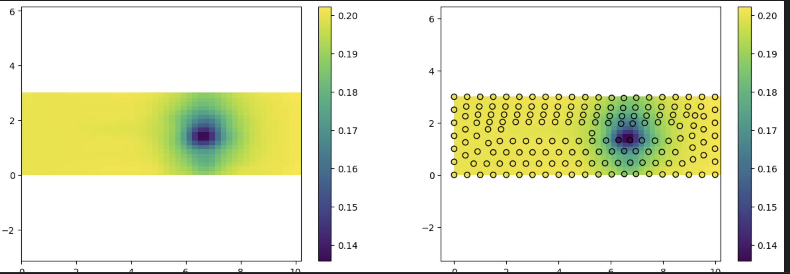
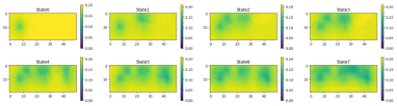

3 Methods
3.1 Dataset
To train a neural network effectively, the first essential component is a dataset. A dataset provides the necessary examples for the network to learn patterns and make accurate predictions. In the context of 3D shape deformation and FEM simulations, having a comprehensive and high-quality dataset is crucial for the network to understand the complex relationships involved in deformation processes.
Unfortunately, there are no public datasets specifically for 3D deformation available. Additionally, our project partner had a limited number of mesh simulations, which required significant time to generate. Consequently, I needed to create my own dataset to test and train my models. This would allow me to proceed with the project and later apply the developed models to the partner’s data.
When searching for deformation and FEM examples, one commonly encountered scenario is a beam fixed at one end, undergoing bending and deformation when a force is applied.
This classic example inspired my dataset design. I modeled a slender, rectangular cuboid beam, fixed at both ends, with a point force applied from various directions to induce deformation.
The resulting dataset consisted of approximately 6300 mesh simulations, capturing the deformations caused by different force vectors at various points on top or bottom surface. This extensive dataset was suitable for training the neural network. I used FreeCAD software for this purpose, with detailed steps and methodologies described in section -XYZ- of this thesis.
By generating this dataset, I ensured that my models had sufficient data to learn from, allowing for robust training and validation. This foundation enabled me to develop and refine the models before applying them to the partner’s specific data, ensuring a smooth transition and effective implementation of AI techniques for 3D shape deformation.
FreeCAD is a general-purpose parametric 3D computer-aided design modeler and a building information modeling software application with finite element method support. I used FreeCAD for several reasons: it is open-source, supports Python scripting, offers an easy setup for FEM, and has a rich forum and community support.
To perform FEM simulations in FreeCAD, I followed these steps:
Geometry Definition: Create the 3D model of the beam. Fixed Constraints: Define the fixed points where the beam is held. Force Constraints: Apply forces at specific points and directions on the beam. (this should change during the data generation loop) Add Material: Assign material properties to the beam. Create FEM Mesh: Generate a triangular mesh for the model. Solving Equations: Use CalculiX to solve the FEM equations and obtain the deformation results.
3.1.1 FCAD data version 1 (first beam)
The output of FEM is typically a deformed mesh, which is a structure used to represent 3D data. A mesh is a special type of graph characterized by its vertices, edges, and faces, making it an excellent and popular data structure for representing 3D data with various complexities and curvatures, especially useful for depicting deformations.
The output from FreeCAD was a deformed mesh where only the vertex positions differed from the initial mesh. The generated meshes all have the same topology, meaning they have the same number of vertices, and the neighborhood of each vertex remains consistent across all meshes. This consistency in topology ensures that the dataset is suitable for training neural networks, as the structural integrity of the meshes is maintained throughout the simulations. However, as the complexity of the mesh increases, its size also grows, which can make rendering and processing somewhat slower. This trade-off between detail and computational efficiency is a key consideration in the use of meshes for 3D data representation.
3.1.2 version 2 (press on top)
To display multistep deformation, I decided to generate a new dataset with different conditions. I considered a cube with a larger surface area and shorter height, fixing it from the bottom. Random force vectors were applied to the surface and perpendicular to it at various points with different magnitudes. The deformation results were recorded for each step. Since these forces were applied sequentially to the object, it was necessary to record the name of each mesh and the state before and after the force application, along with the force specifications, in a separate table. This was done using a pandas DataFrame to facilitate easier access to the data files.
3.1.3 2D images (kriging)
3.1.4 SDF datasets
3.2 Single Step Deformation
Single-step deformation (SSD) involves predicting the reshaping of an object when a force vector is applied to it at a specific point.
In DeepSDF paper, it was demonstrated that a neural network is capable of encoding a 3D object (and a series of 3D objects). In this scenario, the neural network acts as a signed distance function (SDF), where, after training, the network can be queried to determine the distance of any arbitrary point from the surface. By querying the network for a sufficient number of points, we can generate a point cloud, where the distances of these points from the surface are estimated by the neural network. This point cloud allows us to determine the surface boundary of the desired object.
In this study, each shape is encoded using an autodecoder and fed as a reference to the network, allowing the network to encode a wider range of objects. As shown in the image, at the top, two codes corresponding to two objects (leftmost and rightmost ones) are encoded by the network, forming the shapes of a sofa and a chair. By interpolating these codes, we observe a subtle transition between the sofa and the chair, with the reconstructed shapes visible on top. Instead of applying this concept to classes of different objects, we applied it to deformed versions of one object. This way, the network can generate the desired deformed version of an object based on the code, which represents the force applied to the object.
quarto
3.2.1 SSD on Watertight Mesh - Data preparation
In DeepSDF, the object mesh is required to be watertight. which means that the object surface devides the input and output space to distinguish the positive and negative distances from the surface. we used our First Dataset (FCAD Ver1) for training our network. The dataset were a set of triangular meshes, generated by applying various force constraints to a simple beam. To convert the meshes into SDF format, the following steps are required:
Normalization and Scaling:
Each 3D mesh is scaled to fit within a unit sphere. This normalization step ensures consistency across different meshes, making the SDF values comparable.
Virtual Camera Rendering:
The normalized mesh is virtually rendered from multiple viewpoints. Tipically 100 virtual cameras are placed uniformly on the surface of the unit sphere to capture the shape from different angles.
Distance Calculation:
For each viewpoint, the distance from the camera to the closest point on the mesh surface is calculated. This involves projecting points from the 3D space onto the mesh and computing the shortest distance to the mesh triangles.
Point Sampling:
Points are sampled more densely near the mesh surface to ensure higher accuracy in regions of interest. In our implementation, we sampled 400,000 points for each shape in the dataset.
Signed Distance Computation:
Each sampled point is assigned a signed distance value. The sign indicates whether the point is inside (+) or outside (-) the object, and the magnitude represents the shortest distance to the surface.
SDF Representation Storage:
The computed signed distance values for all sampled points are stored, creating a dense representation of the shape’s geometry. which contains x,y,z coordinates of points and the corresponding SDF value.
after converting all meshes in SDF format, we can create a robust dataset and split it to train/test/validation sets. Our fully-connected neural network, designed with six inputs (spatial coordinates and force vectors), demonstrated the capability to accurately predict the SDF values for given deformation scenarios. This approach offers an efficient and flexible solution for modeling geometric deformations in 3D shapes.
3.2.2 Training Neural Network
the designed neural network needs to map the 3D points in the space, to a corresponding SDF value, based on a provided force vector. similar to the DeepSDF paper, we choose a Multilayer Preceptron for this purpose. HPO
** effect of different parameters on estimation -> table
activation function
3.2.3 SSD on non-Watertight Mesh
*** (could be considered as point cloud?!) the data provided by our industrial partner however, was non-watertight. therefore the original DeepSDF method could not be applied there. instead we modify the input and train the neural network. the network could predict the thickness, thinning and deviation with an acceptable error.
3.2.3.1 1D approach
3.2.3.2 2D approach
The deviation and thickness values are available not only along the cuts but for all vertices of the reference mesh. The values determined for each vertex of the 3D mesh can be projected onto a 2D plane using a cylindrical projection. Similar to the previous approach, we can train a model to predict the relevant attributes based on the projected 2D coordinates and the process parameters. We use a regression method based on random forests, but the principle remains the same as with neural networks. Fig. N shows the deviation and thickness values predicted by the model compared to the ground truth.
3.2.3.3 3D approach
providing the x,y,z coordinates of the mesh elements and corresponding properties: thickness, thinning and deviation, the trained network could provide a good estimation of these properties.
similar approach can be applied to the 3D mesh. We have access to the x-, y-, and z-coordinates of the center of each face of the reference mesh as well as the process parameters. These can be used similarly to the 1D cuts to predict the deviation at specific points of the reference mesh (but not the deformed meshes obtained after the FEM simulation, as these have a different number of vertices). The size of the dataset for each drawing depth “Zt” is described in the following table:
| Zt | Number of faces per mesh | Number of simulations | Dataset size |
|---|---|---|---|
| 30 | 26,759 | 500 | 13,379,500 |
| 50 | 28,587 | 250 | 7,146,750 |
| 70 | 31,976 | 250 | 7,994,000 |
3.3 Multi Step Deformation
This chapter explores the multi-step deformation (MSD) process of a cuboid that is fixed at the bottom while sequential force vectors are applied to the top. The objective is to achieve a desired shape through a series of deformations. Here, I used Reinforcement Learning (RL) because it excels in sequential decision-making and learning optimal strategies through trial and error, making it ideal for optimizing the deformation sequence to achieve precise outcomes. World Models, such as PlaNet or Dreamer, are utilized because they effectively learn compact representations of the environment dynamics, enabling efficient planning and control. By combining RL with these World Models, we can accurately predict deformation outcomes and optimize the sequence of applied forces, ensuring a smooth and continuous transformation of the initial cuboid into the desired shape.
As we need to keep track of the state changes, the predictor NN should contain the state information.
The Cross Entropy Method (CEM) is employed to identify the optimal sequence of force vectors (actions) through several key steps. At first, a distribution over possible force vectors is initialized. From this distribution, a set of action sequences is sampled. Each sequence is then evaluated by simulating the deformation process using the neural network, with performance measured by comparing the deformed shape to the desired shape. Based on these evaluations, the distribution is updated to focus on better-performing sequences, increasing the likelihood of sampling optimal sequences in subsequent iterations. This iterative process continues until the deformation sequence converges to an optimal solution.
The optimization continues until a convergence criterion is met. The criterion is defined based on the similarity between the deformed and the target shape. Once convergence is achieved, the final sequence of force vectors represents the optimal strategy for achieving the desired deformation. First we tried 2D approach and then continued with both mesh and implicit representation of the 3D and compare the methods.
3.4 Reinforcement Learning
Reinforcement Learning (RL) is a type of machine learning where an agent learns to make decisions by performing actions in an environment to maximize cumulative rewards. Unlike supervised learning, where the model learns from labeled data, RL relies on the trial-and-error approach, continuously interacting with the environment to improve its policy.
Key Concepts in Reinforcement Learning:
Agent: The learner or decision maker.
Environment: Everything the agent interacts with.
State (s): A representation of the current situation of the agent in the environment.
Action (a): All possible moves the agent can take.
Reward (r): Feedback from the environment based on the action taken by the agent.
Policy (π): A strategy that defines the agent’s action selection, mapping states to actions.
Value Function (V): Estimates the expected reward for an agent starting from a state and following a policy.
Q-Value (Q): Estimates the expected reward for taking an action in a state and following a policy thereafter.
The RL process begins with the agent starting with an initial policy, which is often random. The agent then interacts with the environment by taking actions based on this policy. After each action, the agent receives feedback in the form of a reward and observes the new state. Using this feedback, the agent updates its policy, aiming to maximize future rewards. This process repeats iteratively, with the policy improving over time as the agent gains more experience.
Reinforcement Learning can be categorized into model-based and model-free approaches. Model-based RL involves learning a model of the environment’s dynamics to plan and make decisions, while model-free RL relies solely on learning from interactions with the environment without an explicit model. Several algorithms help in learning the optimal policy in these approaches. Q-Learning is a value-based method where the agent learns the Q-values for state-action pairs and uses them to make decisions. Deep Q-Networks (DQN) combine Q-learning with deep neural networks to handle high-dimensional state spaces. Policy Gradient Methods directly optimize the policy by adjusting it in the direction that increases expected rewards. Actor-Critic Methods combine value-based and policy-based methods, with an actor making decisions and a critic evaluating them.
3.4.1 World Models in Reinforcement Learning
World models are an advanced concept in reinforcement learning that involve creating an internal model of the environment. This model allows the agent to predict future states and outcomes based on its current state and actions, effectively simulating the environment internally. By leveraging world models, agents can plan and make decisions more efficiently, even in complex and high-dimensional spaces.
World models offer several advantages in reinforcement learning. By simulating the environment internally, agents can learn and plan more efficiently, reducing the need for extensive real-world interactions. This internal simulation enables better exploration strategies, allowing agents to evaluate the consequences of exploratory actions without performing them in the real environment. World models are particularly useful in handling complex environments with high-dimensional state spaces or intricate dynamics, where model-free methods might struggle.
Applications of world models span various domains, including robotics, where they are used for planning and control tasks that require an understanding of the environment’s dynamics; autonomous driving, where they help predict and react to the behavior of other vehicles and pedestrians; and game playing, where they enhance performance in complex strategy games by simulating future game states and planning accordingly.
The workflow of a world model-based agent involves data collection through interactions with the environment, model learning to develop perception, transition, and reward models, state inference using the perception module, planning by simulating future states and rewards, and action execution in the real environment. By integrating world models into reinforcement learning, agents achieve more robust and intelligent behavior, making them well-suited for complex and dynamic tasks.
3.4.2 Perception Module
The perception module processes raw sensory inputs from the environment and transforms them into more compact and useful representations. This typically involves using neural networks such as autoencoders. By efficiently encoding sensory information, the perception module helps the agent understand and navigate its environment more effectively.
3.4.3 Transition Model
The transition model, also known as the dynamics model, predicts the next state given the current state and action. It captures the temporal dynamics of the environment and can be implemented using various types of neural networks, including state space models. This model allows the agent to simulate future states and understand how its actions affect the environment over time.
3.4.4 Reward Model
The reward model predicts the expected reward for a given state-action pair. By understanding the reward structure of the environment, the agent can better evaluate the potential benefits of different actions. This helps the agent to make decisions that maximize long-term rewards, guiding it towards achieving its goals more effectively.
3.4.5 Planning Module
With the internal model of the environment, the agent can simulate different action sequences to plan its moves. This planning is often done using model-based algorithms such as Monte Carlo Tree Search (MCTS), trajectory optimization methods, or the Cross Entropy Method (CEM). MCTS explores possible future states by building a search tree, trajectory optimization refines action sequences to maximize rewards, and CEM generates and evaluates a population of action sequences, iteratively refining them based on the best performers. By utilizing these methods, the agent can effectively predict future states and rewards, allowing it to choose actions that optimize its long-term success.
Caption: Formulas representing key components of world models in reinforcement learning, including
the perception module: z = f_\text{perception}(x)
the transition model : s_{t+1} = f_\text{transition}(s_t, a_t)
the reward model : r_t = f_\text{reward}(s_t, a_t) , and the planning module : \text{Best Action Sequence} = \arg\max_{a_1, a_2, \ldots, a_T} \sum_{t=1}^{T} f_\text{reward}(s_t, a_t)
3.4.6 Problem Definition in RL
statet : the cuboid shape in time t
actiont : force vector
statet+1 : the cuboid shape in time t+1
and The transition function that models how the state changes due to the applied action:
\text{state}_{t+1} = f_{\text{transition}}(\text{state}_t, \text{action}_t)
I solved the problem with 2D and 3D approaches, that will be explained in the next sections.
3.5 2D Approach - Image based
As the cuboid is only subjected to force from the top, an image of the top surface can adequately represent the entire shape. For this purpose, I selected the top vertices of the mesh and used the ‘Kriging’ method from Openturns library Baudin et al. (2015) to interpolate the z-values across the entire surface. Kriging Cressie (2015) also known as “Gaussian process regression”, is a method of interpolation based on a Gaussian process governed by prior covariances. It is widely used in spatial analysis and computer experiments to predict values of a spatially distributed variable from sparse data points. Under suitable assumptions of the prior, Kriging provides the Best Linear Unbiased Prediction (BLUP) at unsampled locations, outperforming other interpolation methods based on criteria such as smoothness (e.g., smoothing spline). By considering both the distance and the degree of variation between known data points, Kriging generates a smooth, continuous surface that accurately reflects underlying spatial trends, making it ideal for interpolating from sparse pixels to a smooth image. [image size: 20x50]
Ordinary Kriging has been used here because it assumes the process mean to be constant and unknown. By utilizing a covariance model (specifically, the SquaredExponential covariance model) and the openturns Kriging algorithm, the Kriging metamodel can be fitted using the provided coordinates and observations. These characteristics align well with the Ordinary Kriging method, as accurate spatial data estimations can be provided. Originally developed for geostatistical applications, Kriging is a versatile statistical interpolation method used across various disciplines for sampled data from random fields that meet certain mathematical assumptions. It is particularly useful for estimating data in the spatial gaps between measured points, whether the data is collected in 2D or 3D.

3.5.1 World Model
the world model is our predictor, in a latent space domain. the WMs can be trained offline or online to reflect the effect of the Force (as action) on the compressed version of the state (shape). first I compressed the data utilizing a Conditional ConvolutionalAutoencoder. My model includes an encoder-decoder structure, where the encoder comprises two convolutional layers with ReLU activation functions and max pooling operations to progressively reduce the spatial dimensions while increasing feature depth. The latent space is further manipulated through linear layers that incorporate external conditioning information. The decoder then reconstructs the original input using two deconvolutional layers, aiming to produce an output that closely resembles the initial data. The CCAE is trained to minimize the reconstruction loss, making it suitable for image compression.
n_latent: compression rate ##todo the best parameters - reported from HPO : …

the proposed approach is limited to top surface and can not effectively generalize to 3D. however has an acceptable accuracy and performance and could be applied for similar problems such as [# todo examples] where the 2D prediction would be sufficient.
3.6 3D Approach - Vertex based
instead of converting the top surface to the image, we could directly work on 3D coordinates of vertices on top. in this approach, the NN input would be the same as number of top vertices coordinates (x,y,z) , so usually we could have a smaller NN. as the order of NN inputs are important, we need to keep the topology fixed and assure that the order of vertices is remained fix.
Here I -manually- kept the topology fixed. therefore, my vertices have index and they are ordered. so I trained a simple MLP that directly receives the xyz coordinates of the top vertices and the action , to predict the next placement of vectors. as in real, it rarely happens that we have a mesh dataset with identical topology for all samples, that would be an easy and low-cost approach if needed. the same as image approach, all data ( here vertices’ coordinates ) corresponding to each state, is fed to the network at once. so the network has a “global” view of each state.
as the data size is relatively small, the vertex positions could be applied in RL loop directly. the network has the size of - - - layers , optimized by –. error plots… #todo
3.7 3D Approach - Mesh based
For processing the mesh data, we needed to compress the meshes utilizing the well-known CoMA Ranjan et al. (2018) generating model. the Mesh autoencoder is trained to minimize the reconstruction error on our mesh dataset and using HPO, the best set of parameters are selected. So the trained encoder is now utilized to encode all meshes in the dataset in offline mode.
#todo HPO parameters , mish activation function, compression rate
The encoded meshes are again collected in a form of a dataset to train the WM. During the training of the World Model, the neural network is fed with [State_t, action_t] as input, to predict the State_t+1. please notice that the state is the encoded shape or the so called latent representation of the mesh.
the same as before, the PlaNet is used here, this time for encoded mesh representation. \text{NN}([\text{State}_{t}, \text{action}_t]) \rightarrow \text{State}_{t+1}
3.7.1 Challenges of working with meshes
Working with meshes in combination with neural networks presents several fundamental challenges that we address: The first challenge is the lack of regular structure in mesh vertices, unlike the pixels in an image. Mesh vertices are scattered in three-dimensional space and cannot be easily vectorized from the top-left to the bottom-right like image pixels for input into the network. The second challenge is that the mesh structure must be presented to the neural network all at once, causing the network to become significantly large when dealing with a large mesh with many vertices, thereby increasing the number of learning parameters. The third challenge is that maintaining the mesh topology is very difficult and in many cases seems impossible. In tasks like physical simulation and finite element analysis, the resulting mesh needs to be re-meshed for reprocessing, which alters the mesh topology. (In my case however, I had to preserve the mesh topology manually!) Therefore, using alternative methods that can overcome these problems can be very helpful. In the next section, we introduce implicit methods that can serve as a good alternative to meshes and address these issues.
3.8 3D Approach - Implicit data
For SDF representation, a fixed grid is established, and the distance from the surface is calculated for all meshes within this grid. This grid is randomly sampled in the space surrounding the shape, both inside and near the surface. The fixed grid is essential for tracking distance values, as the network needs to be aware of the current state to predict the subsequent state. The inputs to the network are the xyz coordinates of the query point, the current SDF value at that point (SDFt), and actiont (a force vector) as a condition, with the output being SDFt+1.
For visualization and evaluation, error metrics are used to compare predicted values with target values in the test set. The test set includes various mesh sequences selected from the dataset to assess our method. Since the current SDF for each point is necessary to predict the next SDF value, the process starts from the initial (undeformed) mesh to generate SDF values sequentially. Initially, an SSD (Single-Step Deformation) Network is used, followed by MSD (Multi-Step Deformation) Networks to predict subsequent SDF values.
This SSD Network is trained on undeformed mesh samples and are the same as model described in [chapter X]. the only difference is that, the query points are chosen from our fixed grid point. also a new input (sdft) is fed to the network to represent the current sdf of the query point.
3.8.1 Challenges of working with Implicit data
use of implicit data has a great benefit over explicit methods in applications such as reconstruction, classification etc. they have a good binding with NNs and small network size for embedding and encoding of 3d shapes. however in context of deformation, we need to have a global understanding of the shape - or state - to generalize the action ( Force ) effect on the whole body. as the data unit provided to the network is related to one point ( and not the whole shape ), here the network has a partial observation of the state each time.